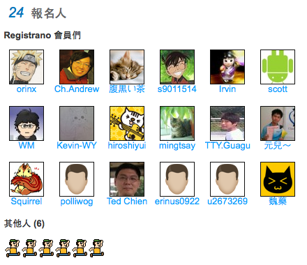

跳躍吧！小莎歡迎你
2011 MozTW SFD Party
 2011 MozTW SFD Party
2011 MozTW SFD Party
繼去年 MozTW SUMO Party & Software Freedom Day 之後，今年 MozTW 也秉持一樣的想法，希望能在軟體自由日當天舉辦小活動，讓大家可以過來聚一聚，可以更認識 MozTW，也知道最近自由軟體的世界當中有什麼新鮮事，並且加入大家，為軟體自由這個環境盡點心力 :)
今年的 Software Freedom Day (SFD) 軟體自由日訂於 2011/09/17 星期六；更多關於軟體自由日的介紹歡迎參考 way3sec 的這篇專文介紹 (中文)，或是參考 SFD 官方網站的介紹 (英文)。
今年的軟體自由日有什麼呢？
- 不論你懂不懂技術，都會有興趣的小演講 (講題請見下方)
- SUMO 翻譯大賽
- 當然還有可以認識好朋友的閒聊時間囉閒聊
節目表與投影片
13:00 開始入場
13:10 Opening 活動開始、SFD 派對簡介與翻譯流程介紹、派對神秘禮物
13:30
Mozilla 的組成 - bobchao
Mozilla 開放秘辛 Feat. MozTW 開放秘辛 - Irvin
14:30~16:00
如果你不熟技術，想知道 Firefox 有什麼好玩的東西，可以聽這塊
．WebFwd - bobchao
．好玩的套件： nicofox - littlebtc
．AMO 有什麼，可以怎麼玩? - toby
如果你已經是進階使用者，想聽聽有什麼新東西的話，請來聽這邊
．Add-on SDK + Add-on Builder - littlebtc
．Rapid Release 介紹以及套件相容問題 - petercpg
．「HTML5 可以幹嘛，好吃嗎？」- timdream
SUMO 翻譯大賽
SUMO 在日文裡頭是相撲的意思，但在此這個縮寫字的全名是：Support Mozilla :)
SUMO 簡單說，是個集結各種常見問題的知識檔案庫。都是一些簡短且對 Firefox 等使用者遇到疑問時，有個很方便查找解決方法的地方。在去年的 SFD，我們已經翻譯了上面常見的文件，但是這一年來隨著 Mozilla 軟體的推陳出新，不少文章都已經有更動過時了，所以我們除了要翻譯高使用率的文章，還要對過時的文章進行修正，到時有機會可以拿到 SFD 紀念 T-shirt，還有數量稀少的神秘禮物喔！
活動相片
請把相片標上 sfd2011 及 moztw 標籤，上傳至 Flickr MozTW 群組或 Picasa 網路相簿，就會出現在這裡嘍！
活動資訊
日期：2011/09/17 13:00-17:00
地點名稱：蛙咖啡
報名頁面：跳躍吧！小莎歡迎你 2011 MozTW SFD Party | Registrano
參加者：


除另有註明外，本站內容皆採創用 CC 姓名標示—相同方式分享條款 3.0 台灣版或更新版本授權大眾使用